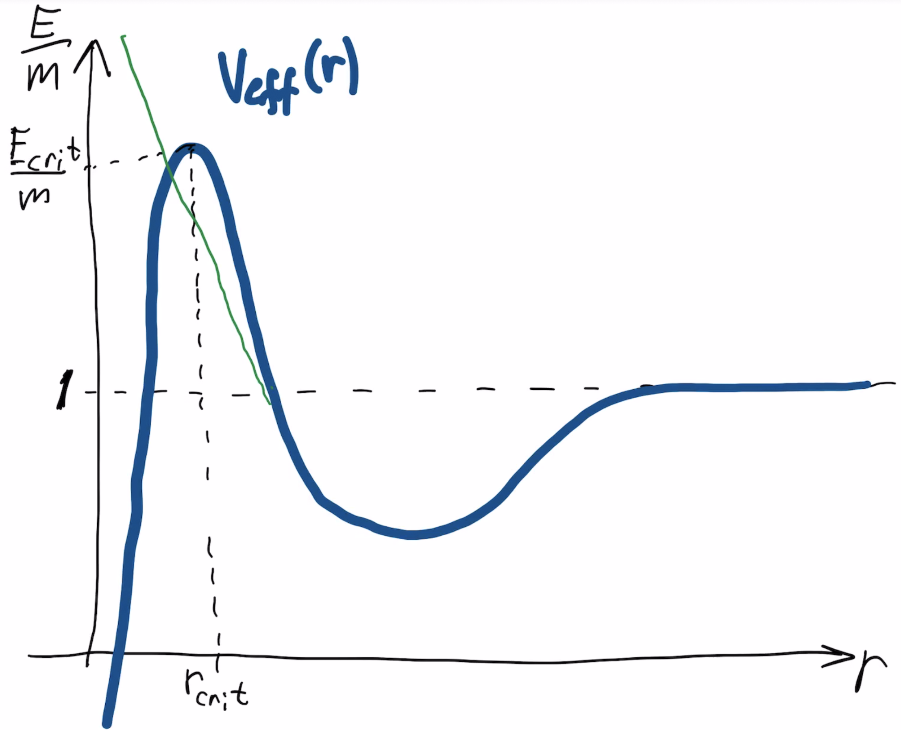

Forrige side🙂 🙁Effektivt potensialPADLET

Lurer du på hvordan planetbanene blir i relativitetsteorien? Spesielt Merkur har et tydelig avvik fra Keplers lover siden den er så nær sola at den blir påvirket av et tyngdefelt så sterkt at avvikene fra Newtons lov blir merkbare. I figuren over har jeg tegnet i grønt det Newtonske potensialet i tillegg til det relativistiske. Merkur er langt unna toppen, men forskjellen i potensialet her vil likevel endre ting, kan du gjette hva det kan være? Neste side